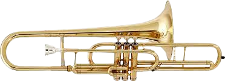
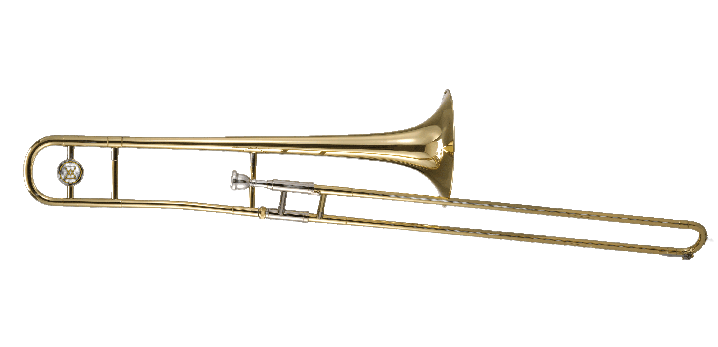
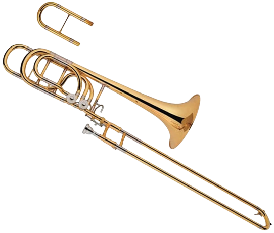

Aqui serão listados todos os intrumentos que aprendemos.
  Trombone de Pistos: Trombone onde se aperta pistos para tocar.
Trombone de Vara: Em vez de pistos, usa-se uma vara movel para tocar.
Trombone Baixo: Usado com pistos ou vara, porém inclui um rotor extra.